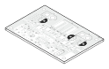
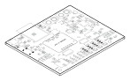
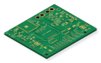
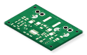
El corazón de la placa de control es un ESP32-S3 de doble núcleo que corre el nodo /orca_board de micro-ROS. Un solo nodo publica la IMU, el estado de la batería y el diagnóstico, y recibe los comandos de motores, servos y CAN.
La placa de potencia usa un controlador buck-boost de cuatro interruptores LM5175: entrega un riel de motores estable aunque la batería esté por encima o por debajo del voltaje pedido.
ORCA-Board (Open Robotics Control Architecture) es una plataforma de control abierta para robots móviles: integra potencia, actuación y sensado en un nodo nativo de ROS 2. Está hecha para laboratorios y equipos que quieren pasar de la idea al robot que se mueve sin rediseñar la electrónica cada vez.
Entrada versátil: baterías LiPo de 2S a 6S. La placa de control se verificó con VBUS de 8 a 22 V y la de potencia regula con entradas de 6 a 25.2 V.
Riel de motores ajustable: de 6.8 a 25 V con el trimmer RV1, hasta 198.7 W medidos en banco y eficiencia de hasta 92.3 %.
Seguridad por diseño: la placa arranca con los motores libres y los servos sin torque, y se detiene sola si deja de recibir comandos.
| Actuación | 2 motores DC (DRV8874, ≈ 3 A por canal) y 16 canales PWM de servo (PCA9685), 5 de ellos en conectores |
| Sensado | IMU BNO085 con fusión en el chip, voltaje de batería (INA226) y corriente de motores (ACS725) |
| Comunicación | micro-ROS por USB-C o Wi-Fi, bus CAN (J2) y UART auxiliar (J5) |
| Expansión | 4 puertos I²C a través de un multiplexor TCA9548A, para encoders y sensores externos |
| Configuración | 20 parámetros ROS 2 que se guardan en la flash y sobreviven a los reinicios |
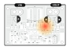
ORCA funciona con baterías de polímero de litio de 2S a 6S, que requieren un manejo cuidadoso. Las baterías LiPo pueden incendiarse o causar quemaduras si se perforan, se sobrecargan o se descargan en exceso. Cárguelas siempre con un cargador balanceador, sobre una superficie a prueba de fuego y bajo supervisión.
Configure el umbral de aviso power.vbus_low_v según el número de celdas de su batería. Cuando /diagnostics marque WARN en power, detenga el robot y recargue.
Conectores polarizados. Las entradas de batería y de motores usan XT60, que solo entran en una posición. Use cables XT60 con la polaridad correcta (rojo = +) y nunca fuerce un conector.
Temperatura de la placa de potencia. La placa sostuvo 59.5 W durante 10 minutos con el punto más caliente a 71 °C, sin disipador. Para potencias mayores, use flujo de aire, limite la operación a periodos cortos y no toque Q3/Q4 durante ni justo después de la operación.
Relación de voltajes. Ajuste VOUT con la placa sin carga. Para cargas de más de 50 W, prefiera un VIN claramente distinto de VOUT, por encima o por debajo.
Corriente de los motores. Cada DRV8874 limita a ≈ 3 A por su cuenta y el firmware corta todo con un HALT si la corriente promedio de VM supera motor.i_limit_a (2 A de fábrica). Para operación continua, mantenga cada motor por debajo de 1.5 A.
Uso supervisado. No deje el robot energizado sin supervisión. Tenga a mano la parada de emergencia: /orca/estop true deja los motores libres y los servos sin torque.
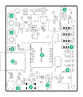
El dibujo de la izquierda sale de las capas de cobre, máscara, serigrafía y taladros de los gerbers de fabricación, en la misma orientación de la placa ensamblada.
| Conector | Función |
|---|---|
| 1J19 · XT60 | VBUS: batería LiPo 2S–6S. Alimenta la lógica, los servos (5 V) y el monitor INA226 |
| 2J20 · XT60 | VM: riel de motores, normalmente desde VOUT de la placa de potencia |
| 3J1 · USB-C | Programación y transporte micro-ROS. Se puede usar junto con VBUS sin riesgo |
| 4J3 · bornera | Motor M1 (rueda izquierda por defecto) |
| 5J4 · bornera | Motor M2 |
| 6J6–J10 | Servos: canales 0 a 4 del PCA9685 (GND, 5 V, PWM) |
| 7J14–J17 · JST EH | I²C externo por el mux TCA9548A: J14/J15 a 5 V, J16/J17 a 3.3 V. Encoders y sensores |
| 8J5 · JST EH | UART 1 hacia un computador auxiliar (IO47/IO48) |
| 9J2 · JST ZH | Bus CAN (CANH, CANL), terminación de 120 Ω en la placa |
| 10U2 | ESP32-S3. No cubra la antena del borde con metal ni cables |
| 11U1 | IMU BNO085. Monte la placa rígida y plana: los ejes de la IMU son los de la placa |
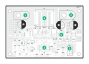
| 1J1 · XT60 | VIN: batería, 6 a 25.2 V |
| 2J2 · XT60 | VOUT: hacia J20 (VM) de la placa de control |
| 3RV1 | Trimmer multivuelta (25 vueltas) para ajustar VOUT |
| 4U1 · LM5175 | Controlador buck-boost de cuatro interruptores |
| 5Q1–Q4 | MOSFET BUK9Y3R5-40E (Q3/Q4: lado de VOUT) |
| 6L1 | Inductor de potencia |
VOUT lo fija el divisor de realimentación con el trimmer RV1. Girar RV1 hacia más resistencia baja el voltaje; hacia menos resistencia, lo sube.
1Sin carga conectada en J2, deje RV1 en máxima resistencia (≈ 6.8 V).
2Energice J1 y mida VOUT en J2 con un multímetro.
3Gire RV1 por pasos hasta el voltaje nominal de sus motores (por ejemplo, 12 V).
4Desenergice, conecte J2 a J20 de la placa de control y vuelva a energizar.
| Esquina de diseño | Modo | Medido |
|---|---|---|
| 6 → 7.2 V | boost | 28.4 W · η 85.9 % |
| 12 → 12 V | transición | 54 W · η 90.5–91.6 % |
| 22.2 → 25 V | boost | 68.7 W · η 91.1 % |
| 25.2 → 7.2 V | buck | 35.3 W · η 82.4 % |
1Ajuste VOUT de la placa de potencia al voltaje de sus motores (página 04).
2Conecte los motores a J3/J4 y los servos a J6–J10 con la batería desconectada.
3Una J2 (VOUT) de la placa de potencia con J20 (VM) de la placa de control.
4Conecte la batería a J19 de la placa de control y a J1 de la placa de potencia.
5Inicie el agente micro-ROS en el PC (página 06). La placa lo encuentra sola en menos de un segundo.
Al arrancar, la placa entra en modo seguro: drivers dormidos, motores libres y servos sin torque. Nada se mueve hasta recibir el primer comando.
Publique /orca/estop true o deje de enviar comandos (los motores paran en 0.5 s) y luego desconecte la batería.
El estado de la placa se lee en /diagnostics, una vez por segundo, en seis grupos: power, motors, servos, imu, system y can.
| OK | Funcionamiento normal |
| WARN | Atención: VBUS bajo, CAN sin respuesta de otro nodo, autoprueba activa |
| ERROR | HALT por sobrecorriente o parada, o un periférico (INA226, PCA9685, BNO085) que no responde |
El ESP32 no habla DDS directamente: habla XRCE-DDS con el agente, que crea en su nombre las entidades que ven los demás nodos. Si el agente se reinicia, la placa vuelve a conectarse sola, sin reiniciarse.
La red y la IP del PC se graban en el firmware al compilar el entorno orca_wifi. El PC y la placa deben estar en la misma red y sin aislamiento de clientes (un router propio o el hotspot del PC funcionan bien).
Si ya manejaste una tortuga en turtlesim, mover tu robot será igual de fácil. El primer recorrido se hace desde el teclado:
/cmd_vel: tracción diferencial. Con teleop_twist_keyboard el robot avanza y gira con las teclas.
/motor_cmd: duty directo de M1 y M2, en %, para su propio controlador.
/servo_cmd: ángulo en grados de cada canal de servo; NaN = sin torque.
Con ros2 topic, rqt o sus propios nodos puede monitorear y analizar en tiempo real el estado del robot. Todos los nombres aceptan un namespace (por ejemplo /robot1/imu) para manejar varias placas.
| Tópico | Dir. | Frecuencia | Contenido |
|---|---|---|---|
| /imu | pub | 50 Hz* | Orientación, velocidad angular y aceleración (BNO085) |
| /battery_state | pub | 2 Hz | VBUS y corriente de motores |
| /diagnostics | pub | 1 Hz | Seis estados de la placa |
| /can_rx | pub | según el bus | Tramas recibidas por J2 |
| /cmd_vel | sub | ≥ 5 Hz | Tracción diferencial en lazo abierto |
| /motor_cmd | sub | ≥ 5 Hz | Duty de M1 y M2 (−100 a 100 %) |
| /servo_cmd | sub | libre | Ángulo de los 16 canales del PCA9685 |
| /orca/estop | sub | libre | Parada enclavada |
| /can_tx | sub | libre | Tramas a transmitir por J2 |
imu.rate_hz (1 a 200 Hz). /imu es best effort: suscríbase con el perfil sensor data.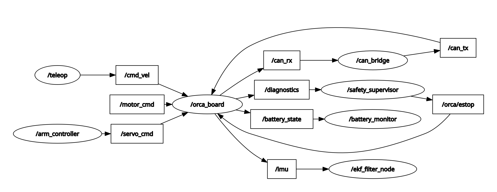
/orca_board junto con nodos de ejemplo del PC, sobre el firmware real.Fusión de sensores: robot_localization acepta /imu directamente. La orientación usa el Game Rotation Vector (sin magnetómetro): el yaw es relativo al arranque y no se altera con los motores cercanos.
Los 20 parámetros se cambian con ros2 param o rqt_reconfigure. Cada cambio se valida, se aplica al instante y se guarda en la flash.
| Parámetro | Fábrica | Para qué sirve |
|---|---|---|
| drive.wheel_separation | 0.20 m | Distancia entre ruedas para /cmd_vel |
| drive.max_wheel_speed | 0.50 m/s | Velocidad de rueda a 100 % de duty |
| motor.max_duty | 100 % | Recorte del duty; empiece bajo en un robot nuevo |
| motor.i_limit_a | 2.0 A | Umbral de sobrecorriente de VM |
| motor.cmd_timeout_ms | 500 ms | Tiempo del deadman |
| servo.us_min / us_max | 500 / 2400 µs | Pulso a 0° y a 180° |
| imu.rate_hz | 50 Hz | Frecuencia de /imu |
| can.bitrate | 25 kbit/s | Velocidad del bus CAN |
| power.vbus_low_v | 6.0 V | Umbral de aviso de batería baja |
| Situación | Reacción de la placa |
|---|---|
| Arranque | Motores libres y servos sin torque hasta el primer comando |
| Sin comandos por 500 ms | Consigna a 0 con rampa; luego los drivers se duermen |
| Se pierde el agente | Motores libres de inmediato; servos sueltos si servo.limp_on_disconnect |
/orca/estop true | HALT enclavado: se ignoran los comandos de movimiento |
| Sobrecorriente en VM | HALT enclavado; la tarea de corriente corta los drivers sin esperar al lazo principal |
| Firmware bloqueado > 5 s | El watchdog reinicia la placa, que arranca en modo seguro |
XT60 polarizadosTVS SMBJ5.0A en USBESD TPD4E001OR de diodos SS54ITRIP ≈ 3 A por driverLímite ciclo a ciclo del LM5175UVLO por EN
El OR de diodos permite tener la batería y el USB conectados a la vez: el USB no alimenta los servos y la batería no alimenta al PC.
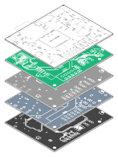
La Rev A cumple el alcance definido por el equipo para una plataforma de control abierta. Resumen de los requerimientos y de su implementación:
P1: Entrada de batería 2S–6S por XT60, con VBUS verificado de 8 a 22 V.
P2: Riel de motores regulado de 6.8 a 25 V por buck-boost LM5175, hasta 198.7 W.
P3: Dos drivers DRV8874 con limitación de corriente, probados con motores N20 y Faulhaber.
P4: Driver de servos PCA9685 de 16 canales, validado con un brazo de cuatro servos.
C1: ESP32-S3 de doble núcleo con nodo nativo de ROS 2 (micro-ROS, Jazzy).
C2: Transporte por USB-C o por Wi-Fi, validado en el robot SWARM.
C3: Bus CAN (TWAI + SN65HVD230) y UART auxiliar para cómputo externo.
S1: Orientación con BNO085 y fusión en el chip, a 50–100 Hz.
S2: Monitoreo de batería (INA226) y de corriente de motores (ACS725).
S3: Expansión I²C de 4 canales (5 V y 3.3 V) para encoders y sensores.
F1: PCB de 4 capas, ensamblada por JLCPCB; autoprueba de la placa de control con 8 de 8 pruebas aprobadas.
F2: Diseño abierto en KiCad, con gerbers, BOM, firmware y guías en el repositorio (licencia MIT).
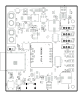
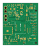
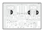
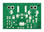
La ORCA-Board es la plataforma de control que queríamos tener cuando empezamos a construir robots. Dos placas, una interfaz: la potencia y la lógica van separadas para que cada robot use solo lo que necesita, y todo se ve desde ROS 2 como un nodo más.
Hecha para abrirse. Cada capa, cada pista y cada parámetro están documentados en el repositorio. Si su robot necesita otra cosa, la base ya está hecha.
Todas las vistas de esta página se generaron desde los gerbers de fabricación (cobre, máscara, serigrafía, contorno y taladros), sin retoque manual.
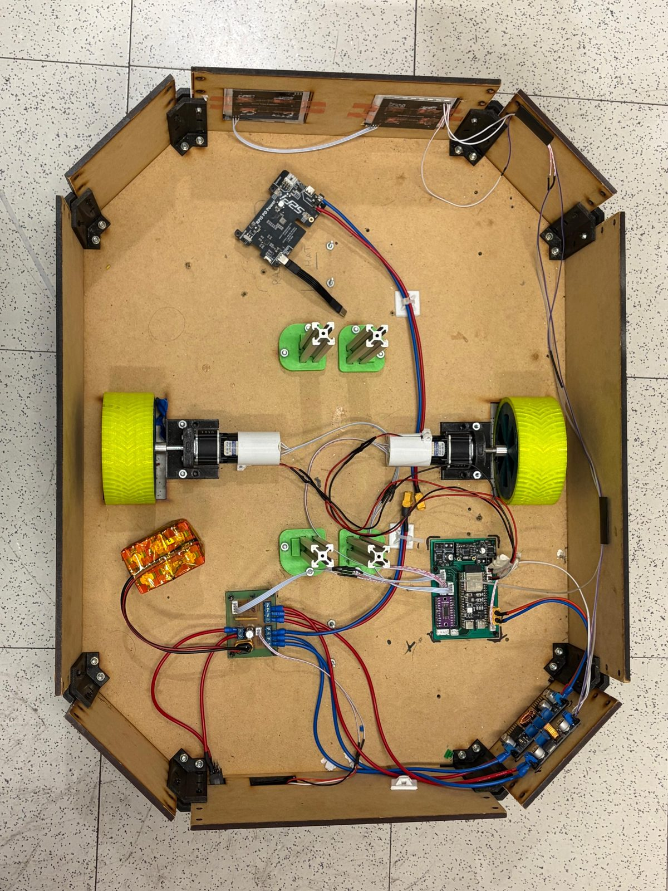
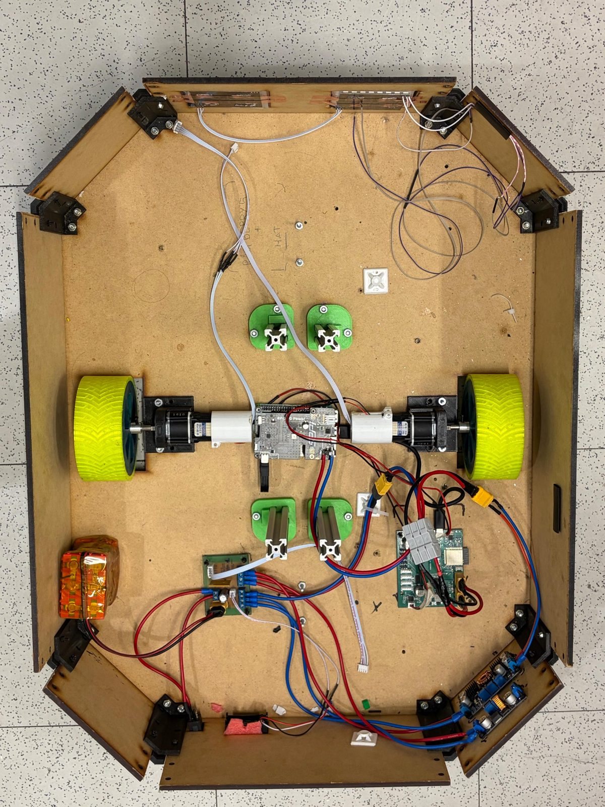
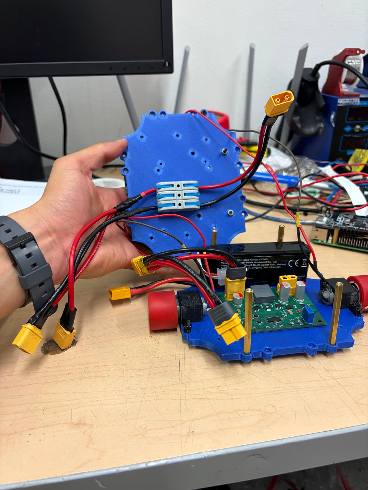
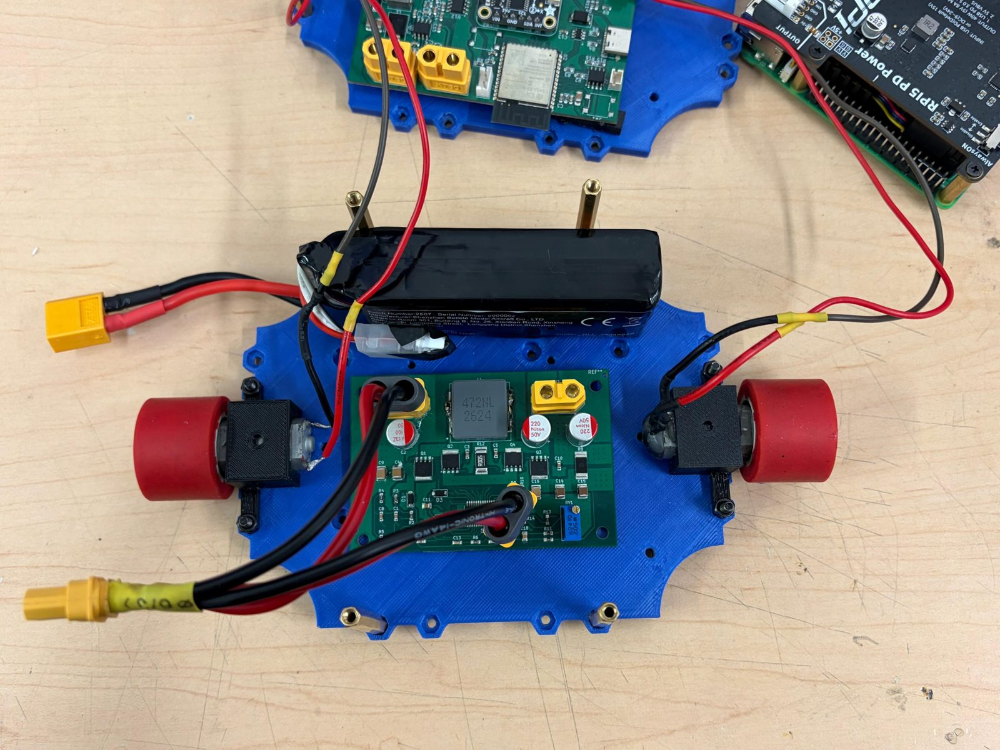
SWARM. La placa de control se integró en el robot y respondió correctamente a las señales de movimiento enviadas por Wi-Fi desde ROS 2, en una Raspberry Pi 5 que dirige la placa.
Robot diferencial. ORCA con micro-ROS y ROS 2 movió un robot diferencial con reconocimiento visual, al estilo de un TurtleBot.
Placa de control
Juan Felipe Angulo
Felipe Gutiérrez Apráez
Placa de potencia
Luis Ángel Aristizábal
Universidad de los Andes
Facultad de Ingeniería
(C) 2026 · Licencia MIT